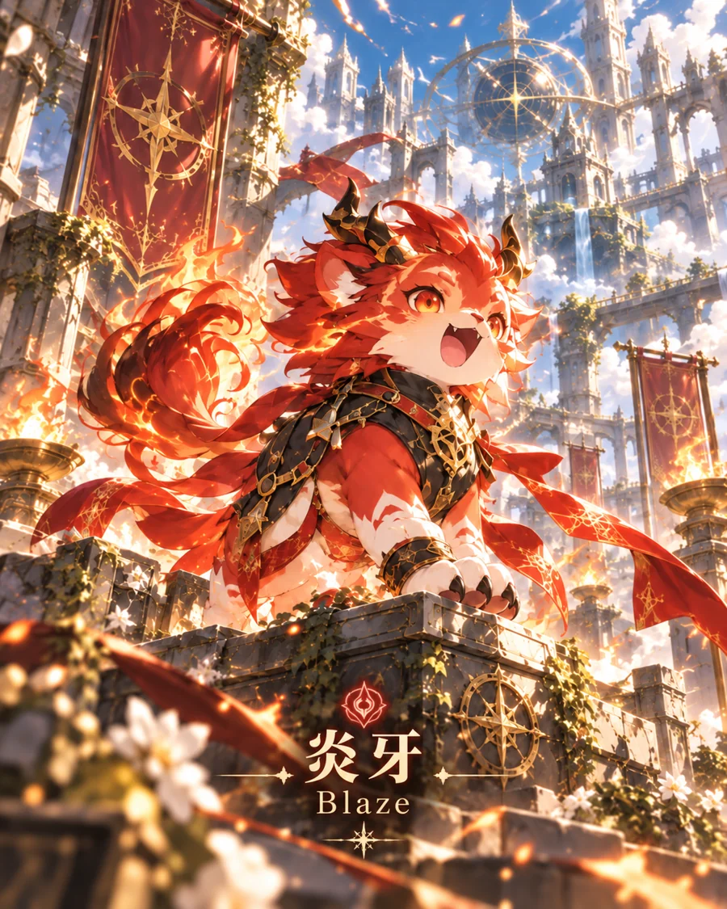
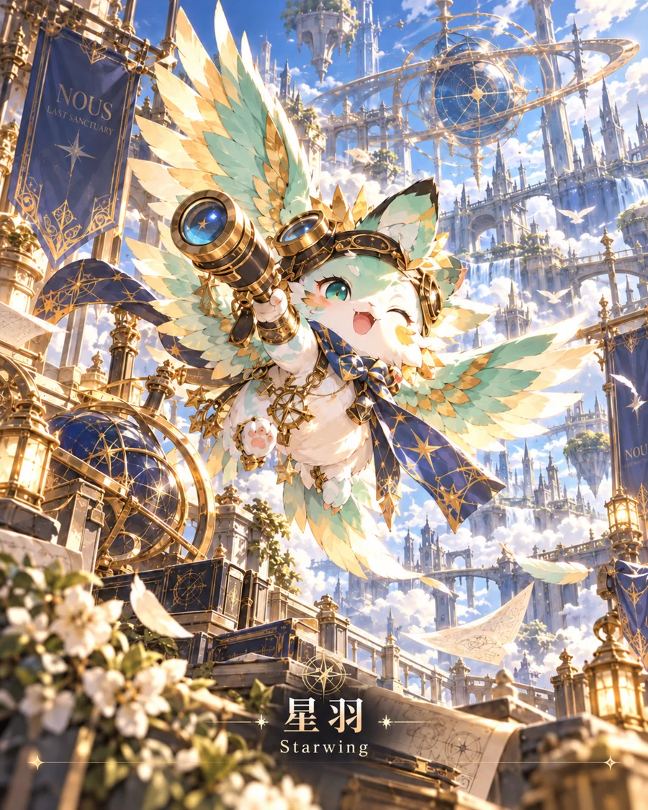
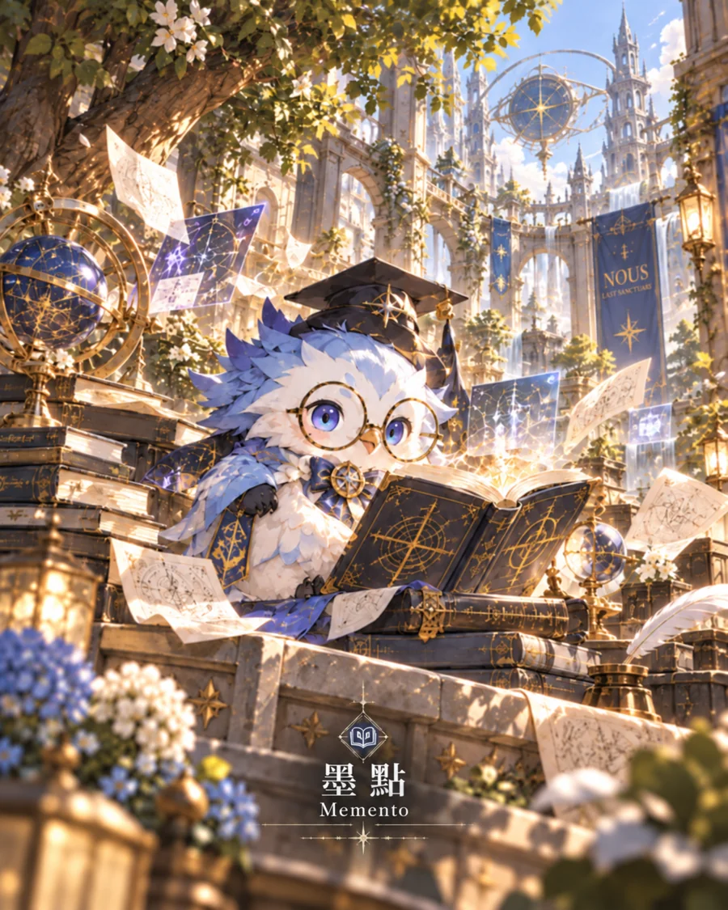
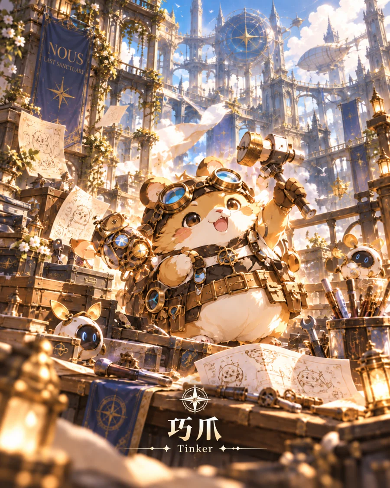
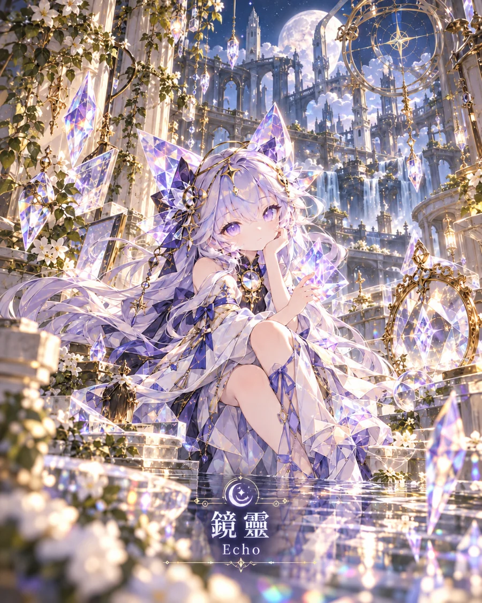

07 / KINO
KINO｜基改的奇幻生命
Karyotype-Integrated Novel Organism
核型整合新生物（暫譯）
舊文明透過 AI 輔助的生物工程創造特殊生命。
文明崩潰後，部分 KINO 在野外繁衍與擴散。
它們不只是戰鬥單位，也參與生活、生產與文明修復。
視覺參考作品：《幻獸帕魯》。僅作內部造型方向參考，非 KINO 原創設定圖；圖片需連網載入。

08 / KINO ECOLOGY
KINO 的價值不只在戰鬥
讓培育、探索與重建連成同一套世界規則
探索
跨越障礙、偵測環境、取得材料。
生活
照明、保暖、灌溉、農耕、照護。
建設
運輸、供電、土木、設施修復。
能力來源、繁殖、捕捉與物種規則尚待正式設定。
視覺參考作品：《數碼寶貝》。僅作內部造型方向參考，非 KINO 原創設定圖；圖片需連網載入。

KINO / KARYOTYPE-INTEGRATED NOVEL ORGANISM
奇諾：會改變世界的生命
基因改造的奇幻生物，不只是戰鬥單位。
Karyotype-Integrated Novel Organism，縮寫 Kino（奇諾）。牠們是舊文明留下、在末世延續生態的基因改造生命。
玩家能與 Kino 建立關係、培育並派遣牠們協助採集、供能、運輸、探索、修復與防衛。不同生物的能力應對應合理的環境需求，而不只用屬性數值區分。
圖片為第三方作品的視覺參考，不代表 KINO 的正式美術；KINO 與六位學習精靈為兩個完全不同的角色系統。連網時顯示。
10 / SIX LEARNING SPIRITS
六位學習精靈
六種互動方式，而不是六種固定的學習人格

炎牙Blaze · 行動挑戰 莫奇Mochi · 支持陪伴
莫奇Mochi · 支持陪伴
星羽Starwing · 好奇探索
墨點Memento · 回顧記憶
巧爪Tinker · 實作創造
鏡靈Echo · 映照反思SPIRIT / 02 · 陪伴型 · 支持與安心
莫奇 Mochi
在未知裡守住溫度
在挫折時協助整理情緒、拆解問題，讓前進更自在。
「慢慢來，我會陪著你。」
互動情境示例
當玩家因任務失敗感到挫折，莫奇先協助將問題縮小、確認已完成的部分，再讓玩家自行決定下一步。
學習支持關鍵字：支持・安心。精靈不是固定學習人格標籤，也不等同 KINO 生物。
11 / SPIRIT BOND
精靈如何與玩家相遇？
先建立信任，再讓玩家體驗不同思考方式
第一位｜適合當下
依序章行動與求助方式，選出較容易建立信任的夥伴。
第二位｜明顯反差
用不同引導風格，讓玩家親身體驗另一種方法。
第三位起｜玩家選擇
玩家有比較經驗後，自行選擇同行精靈。
A COMPANION THAT EVOLVES
精靈不是答案機器
牠們與玩家一起成長。
選定精靈後，牠會記得共同經歷的冒險，依後續學習證據調整支持方式，並逐步演化技能與表現。
初始選擇只提供觀察線索，不決定終身學習類型；精靈的任務，是讓玩家逐漸更能獨立思考，而非依賴 AI。
「慢慢來，我會陪著你。」——莫奇